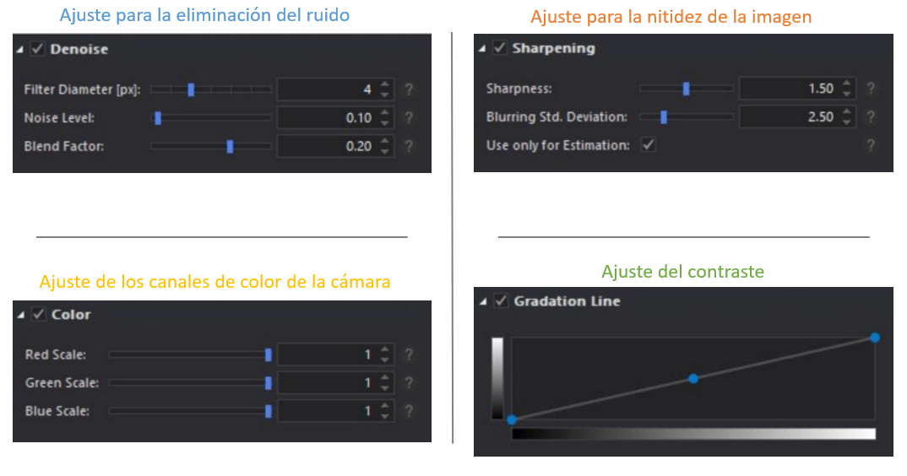
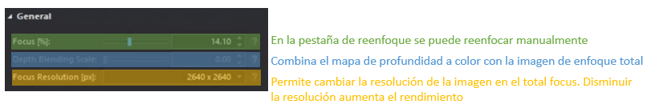
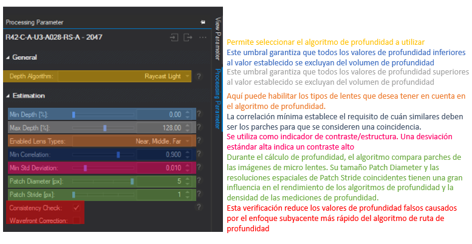
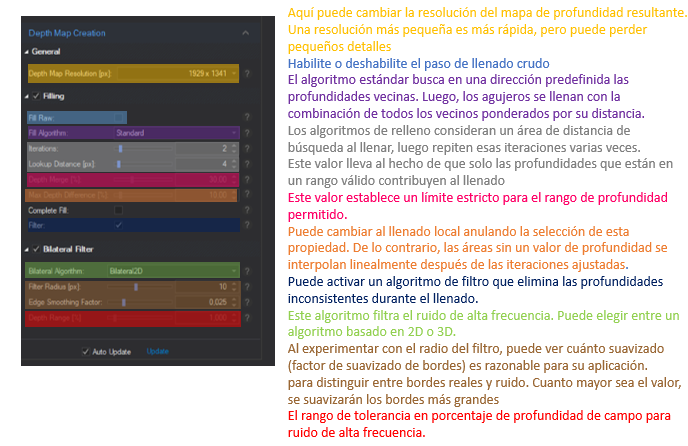

Parámetros de procesamiento
En el lado derecho de RxLive podrá encontrar los parámetros de procesamiento. Es de vital importancia establecer muy bien los parámetros para obtener muy buenos resultados. Aquí podrá encontrar cada configuración. En la parte inferior de la configuración de parámetros puede encontrar Auto Update y Update. Si la actualización automática esta activa, cada cambio de configuración se calculara directamente, lo cual podría tardar algún tiempo. Si se desactiva esta opción de actualización automática se pueden forzar nuevos cálculos haciendo clic en actualizar.
Parámetros de preprocesamiento

Parámetros de enfoque

Parámetros de estimación de profundidad

